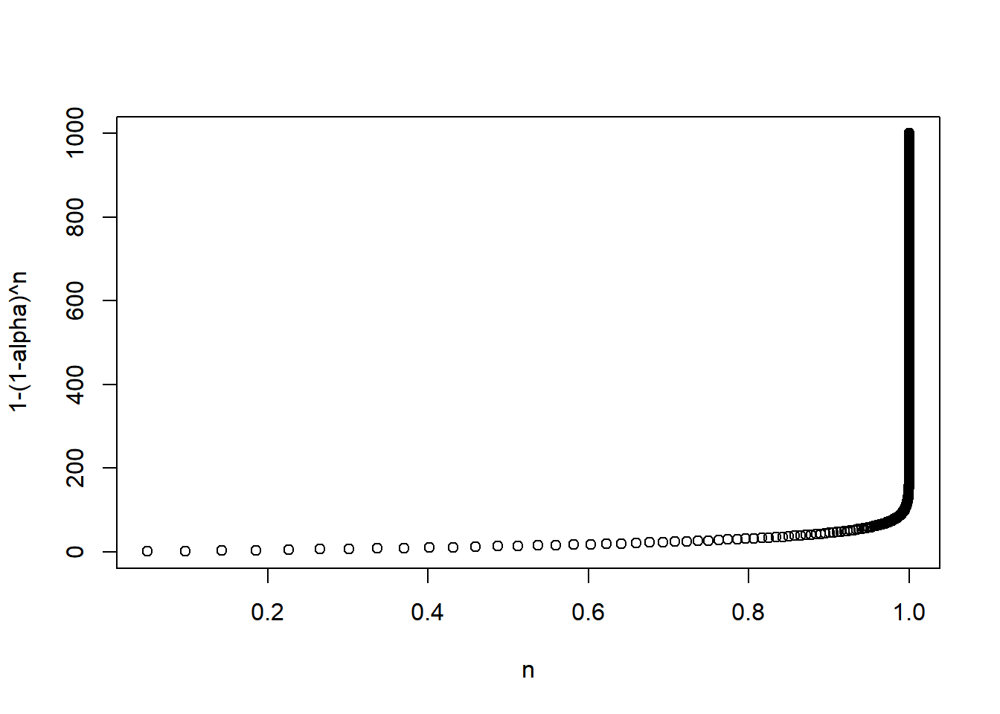
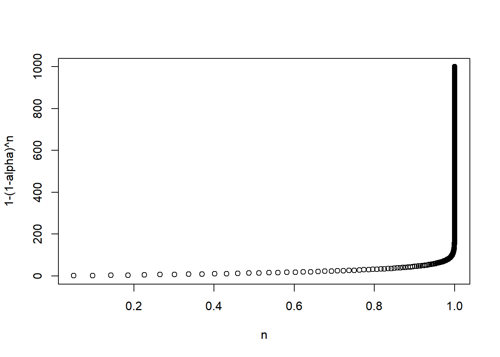

alpha=0.05
n <- 1:1000
p <- 1-(1-alpha)^n
plot(p,n, xlab="n", ylab="1-(1-alpha)^n")
En el contexto de evaluación, cometemos el error tipo I al concluir que hay un efecto de tratamiento cuando la \(H_0\) es verdadera, es decir, cuando \(H_0:\;\beta_i=0\). En una investigación fijamos \(\alpha\), la probabilidad de rechazar \(H_0\) cuando \(H_0\) es cierta. Por ejemplo, en economía trabajamos con \(\alpha=0.05\) o \(\alpha=0.01\).
El problema con probar múltiples hipótesis es que inflamos la tasa de error tipo I. Por ejemplo, si tenemos 100 hipótesis y si usamos un valor estándar de \(\alpha=0.05\), esperaríamos rechazar 5 hipótesis por suerte.
Si realizamos una prueba, la probabilidad de cometer un error es \(\alpha\) y la de no cometer un error es \(1-\alpha\).
Si realizamos \(n\) pruebas, la probabilidad de no cometer un error es \((1-\alpha)^n\) y la probabilidad de cometer al menos un error es \(1-(1-\alpha)^n\).
Es decir, la probabilidad de cometer al menos un error se incrementa exponencialmente.
Veamos esto gráficamente:
alpha=0.05
n <- 1:1000
p <- 1-(1-alpha)^n
plot(p,n, xlab="n", ylab="1-(1-alpha)^n")
Para enfrentar este problema seguimos dos estrategias:
Controlar o ajustar \(\alpha\)
Crear índices que agreguen varias variables
Siguiendo a Popper (1995), definimos familias de variables y haremos el ajuste hacia adentro de estas familias. Por ejemplo, en el artículo que estudiamos de Banerjee et al. (2015), las familias son:
Dentro de cada familia tenemos \(n\) hipótesis \(H_i\), con un valor \(p\) asociado \(p_i\). Recordemos que \(p_i\) es la probabilidad de que el estadístico \(T_i\) exceda el valor teórico \(t_i\). Ordenemos las hipótesis de menor a mayor,con \(p_1\) siendo el valor más pequeño: \(p_1\leq p_2\ldots \leq p_n\).
El método propuesto por Bonferroni controla la tasa de error por familia (FEWR por family-wise error rate) definida como la probabilidad de cometer al menos un error tipo I.
Este método consiste en rechazar \(H_i\) si \(p_i\leq \alpha_i\), donde \(\alpha_i\) se escoge de forma que \(\sum_i\alpha_i=\alpha\). Usualmente se hace \(\alpha_i=\frac{\alpha}{n}\).
Por ejemplo, con dos tests y \(\alpha=0.05\), \(\alpha_i^B=0.025\).
Noten que esta corrección es bastante conservadora.
Alternativamente, podemos ver esta correción como crear unos valores \(p^B\) ajustados: \(p_i^B=p_i\times n\).
¿Por qué preocuparnos por la FWER?
La idea de la FWER tiene sentido si nos preocupa tener incluso un solo falso positivo. En la práctica, podemos vivir con algunos falsos positivos.
Este método controla la tasa de falso descubrimiento. Si \(V\) es el número de falsos rechazos (cuando rechazamos la \(H_0\) que es verdadera) y si \(R\) es el número total de rechazos, entonces \(Q=V/R\) es la proporción de falsos rechazos.
Al valor esperado de \(Q\) se le conoce como tasa de falsos rechazos (FDR por false discovery rate).
Sea \(k\) el más grande de los \(i\) tal que
\[p_i\leq\frac{i}{n}\alpha\] entonces la corrección consiste en rechazar todos los \(H_i\) para \(i=1,2,\ldots,k\). En la práctica usamos R
Usemos los datos del artículo de Benjamini & Hochberg (1995), que tienen 15 hipótesis y trabajan con \(\alpha=0.05\):
data.pvalues<-read_csv("../files/data_benjamini_hochberg.csv",
locale = locale(encoding = "latin1"))
n <- 15
alpha <- 0.05
data.pvalues# A tibble: 15 × 2
poriginal hipotesis
<dbl> <dbl>
1 0.0001 1
2 0.0004 2
3 0.0019 3
4 0.0095 4
5 0.0201 5
6 0.0278 6
7 0.0298 7
8 0.0344 8
9 0.0459 9
10 0.324 10
11 0.426 11
12 0.572 12
13 0.653 13
14 0.759 14
15 1 15Si hacemos la correción de Bonferroni:
data.bonferroni <- data.pvalues %>%
mutate(bonferroni_alpha=alpha/n) %>%
mutate(bonferrini_rechazar=ifelse(poriginal<=bonferroni_alpha,1,0))
data.bonferroni# A tibble: 15 × 4
poriginal hipotesis bonferroni_alpha bonferrini_rechazar
<dbl> <dbl> <dbl> <dbl>
1 0.0001 1 0.00333 1
2 0.0004 2 0.00333 1
3 0.0019 3 0.00333 1
4 0.0095 4 0.00333 0
5 0.0201 5 0.00333 0
6 0.0278 6 0.00333 0
7 0.0298 7 0.00333 0
8 0.0344 8 0.00333 0
9 0.0459 9 0.00333 0
10 0.324 10 0.00333 0
11 0.426 11 0.00333 0
12 0.572 12 0.00333 0
13 0.653 13 0.00333 0
14 0.759 14 0.00333 0
15 1 15 0.00333 0Pero si ahora hacemos la de Benjamini & Hochberg
data.bh <- data.pvalues %>%
mutate(bh_alpha=alpha*hipotesis/n) %>%
mutate(bh_rechazar=ifelse(poriginal<=bh_alpha,1,0))
data.bh# A tibble: 15 × 4
poriginal hipotesis bh_alpha bh_rechazar
<dbl> <dbl> <dbl> <dbl>
1 0.0001 1 0.00333 1
2 0.0004 2 0.00667 1
3 0.0019 3 0.01 1
4 0.0095 4 0.0133 1
5 0.0201 5 0.0167 0
6 0.0278 6 0.02 0
7 0.0298 7 0.0233 0
8 0.0344 8 0.0267 0
9 0.0459 9 0.03 0
10 0.324 10 0.0333 0
11 0.426 11 0.0367 0
12 0.572 12 0.04 0
13 0.653 13 0.0433 0
14 0.759 14 0.0467 0
15 1 15 0.05 0Otra forma comúnmente usada de evitar el problema de las múltiples hipótesis es crear índices. Kling, Liebmand y Katz (2007) proponen el siguiente promedio de los \(z\)-score para generar un solo índice. Para ello, se sigue el siguiente procedimiento:
Definir las familias y las variables que componen cada familia, donde \(y_{ij}\) es la \(j\)ésima variable en la familia con \(J\) variables.
Definir las varibles \(y_{ij}\) de tal forma que mayores valores se interpreten como mejora.
Crear \(z_{ij}\) como \(z_{ij}=\frac{y_{ij}-\bar{y_j}^C}{sd(y_j)^C}\sim(0,1)\), es decir, estandarizar cada una de las \(J\) variables usando al grupo de control como referencia.
Crear \(z_i\), un solo índice para cada individuo que agregue los \(J\) índices creados antes
El procedimiento descrito en Banerjee et al. (2015) es bastante general, pues incluye el caso donde hay varias rondas de seguimiento y varios países.
Podemos escribir el índice descrito como:
\[z_i=\frac{(\frac{1}{J}\sum_j z_{ij})-\bar{z}_j^C}{sd(z_j^C)}\]
Esta transformación tiene la ventaja de que en la siguiente regresión de efecto de tratamiento
\[z_i=\alpha+\beta T_i + X_i'\gamma+\varepsilon_i\]
el coeficiente \(\beta\) se interpreta como el efecto del tratamiento medido en desviaciones estándar con respecto a la media del grupo de control.
Noten que todos las variables dentro de la familia pesan igual. Quizás nos gustaría tomar en cuenta la correlación entre las variables dentro del índice
Anderson (2008) propone el siguiente índice, que puede verse como una generalización del de Kling:
\[\bar{s}_i=\frac{1}{W_{i}}\sum_{j\in J} w_j z_{ij}\]
En este índice, \(w_j\) es el peso para la variable \(j\) y \(W_i=\sum_{j\in J}w_{j}\). Los pesos son una función de la matriz de covarianzas entre las variables que conforman la familia. Diversos software ya incluyen funciones para obtener los índices de Anderson (2008).